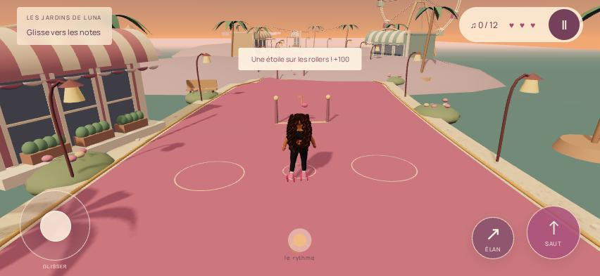
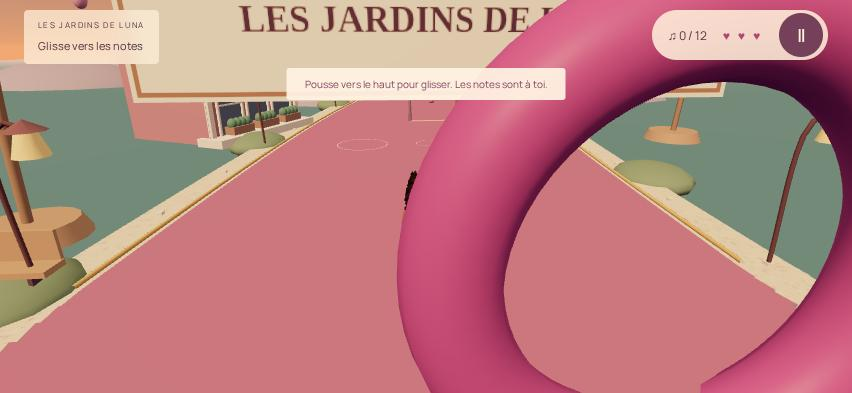
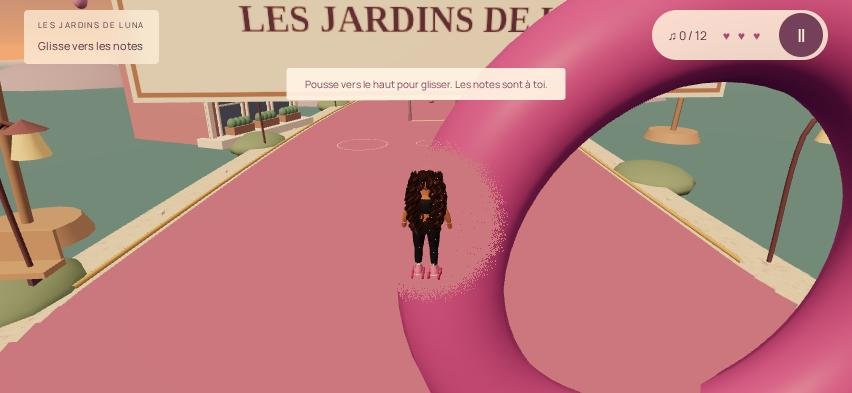
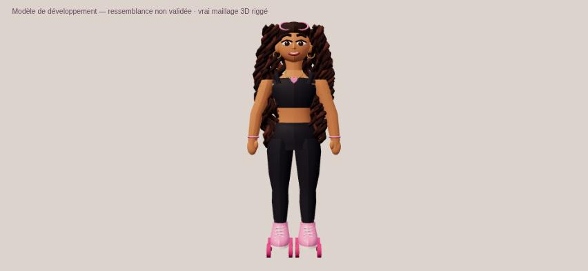
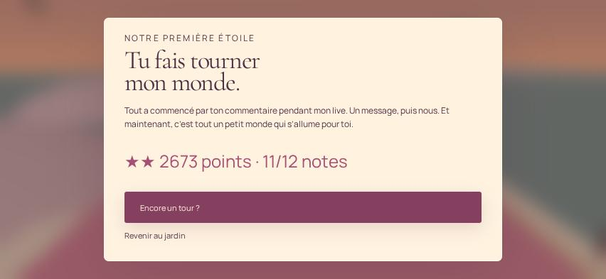

Un petit monde.
Des progrès bien réels.
Une piste de rollers courbe, un parc au coucher du soleil et Mariam en véritable 3D. Cette première scène est jouable ; sa finition artistique reste en développement.
Entrer dans les jardins de Luna ↗
Patinage, freinage, accélération, saut, figure, 12 notes, trois cœurs et deux checkpoints. Le tremplin peut être contourné ; rejouer permet d'améliorer son score. Musique synthétisée originale après le lancement.
La caméra, mise à l'épreuve


La protection concerne cette nouvelle scène. Les anneaux des neuf anciens niveaux ne sont pas déclarés corrigés.
Une Mariam 3D, encore à affiner

20 os, 10 maillages skinnés, 23 940 triangles. Les vêtements, rollers, bijoux et boucles ont un volume réel.
Le visage, les mains, les cheveux et les déformations ne sont pas encore au niveau des références officielles. Le rig facial, les expressions et les clips d'animation finalisés restent à créer.
Ce personnage n'est pas présenté comme définitif.
Les vérifications exécutées
25 contrôles navigateur, 17 tests de la nouvelle simulation et du modèle, 20 tests de régression classiques : réussis. Parcours achevé avec 11/12 notes, 2 673 points et un cœur restant ; deux chutes dont une volontaire.

Safari sur iPhone physique n'a pas été testé. WebKit Linux ne le remplace pas. Les 60 FPS ne sont pas validés : le serveur au rendu logiciel atteint environ 9,7 FPS sur l'échantillon final. Aucun chiffre iPhone n'est inventé.
Voir les 25 contrôles
| Contrôle exécuté | Résultat |
|---|---|
| boot WebGL | Réussi |
| forward movement | Réussi |
| rig is skinned | Réussi |
| original soundtrack scheduled after gesture | Réussi |
| jump above ground | Réussi |
| pause freezes simulation | Réussi |
| two-finger steering and jump | Réussi |
| touch cancel clears input | Réussi |
| continue offered after reload | Réussi |
| reload resumes checkpoint and collected notes | Réussi |
| steering off edge charges exactly one heart | Réussi |
| fall returns to checkpoint with camera | Réussi |
| checkpoint reload and fall exercised | Réussi |
| full course won by keyboard events | Réussi |
| course collects notes | Réussi |
| three legacy save strings unchanged | Réussi |
| no overflow 667x375 | Réussi |
| rotate message 667x375 | Réussi |
| no overflow 932x430 | Réussi |
| rotate message 932x430 | Réussi |
| no overflow 393x852 | Réussi |
| rotate message 393x852 | Réussi |
| body and landing framed | Réussi |
| WebKit Linux movement | Réussi |
| no Chromium JavaScript / shader errors | Réussi |
La suite, après validation
La finition de Mariam et les essais iPhone précèdent le hub 3D, Fashion Studio, Barbie World, les autres tenues et les cinématiques avec Rishanth. Le retour au checkpoint est actuellement technique, sans sauvetage animé.